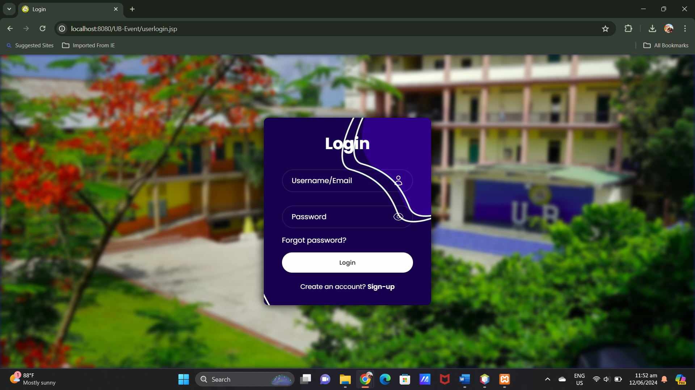
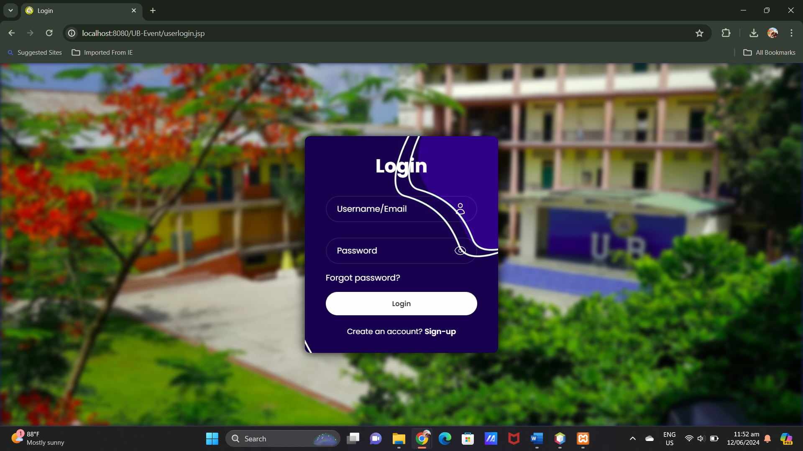
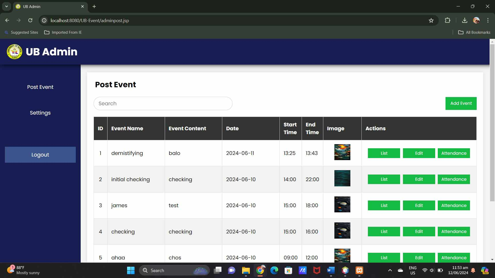
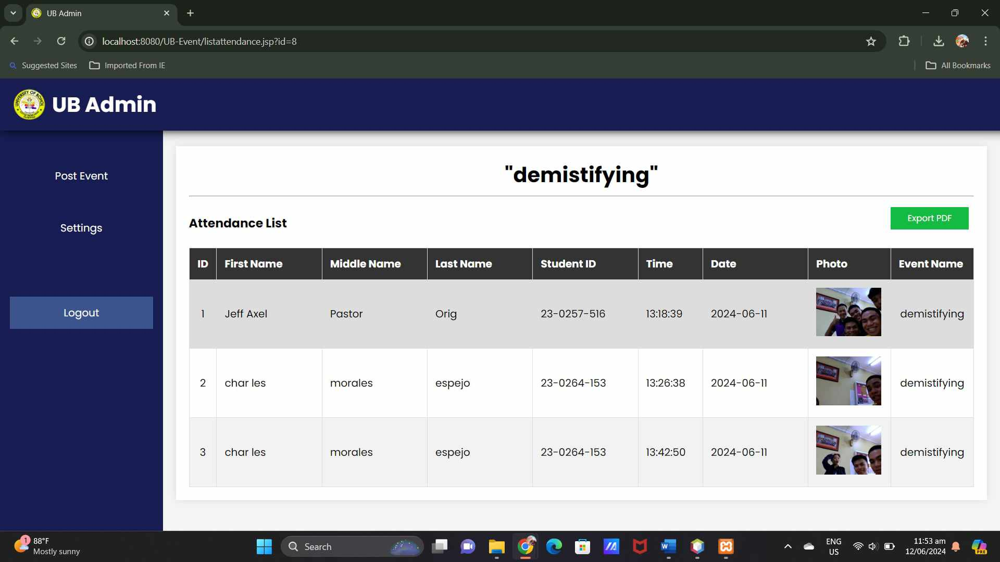
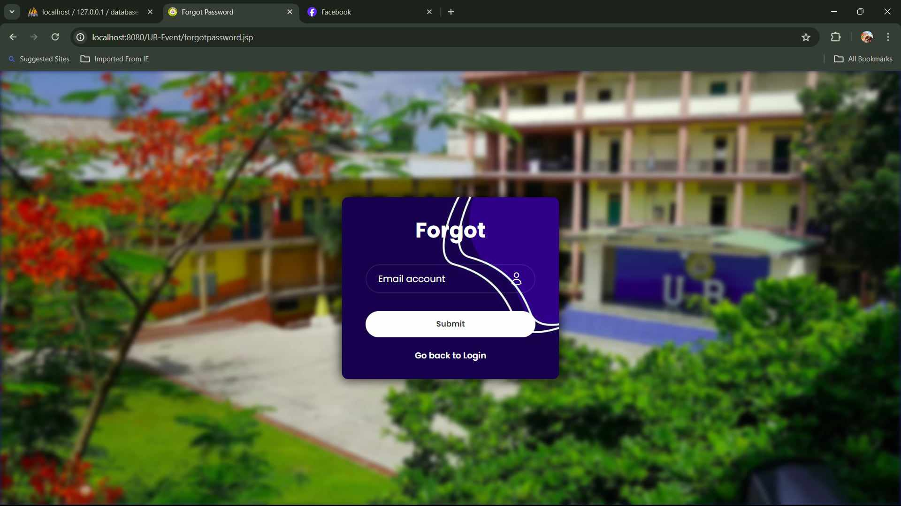
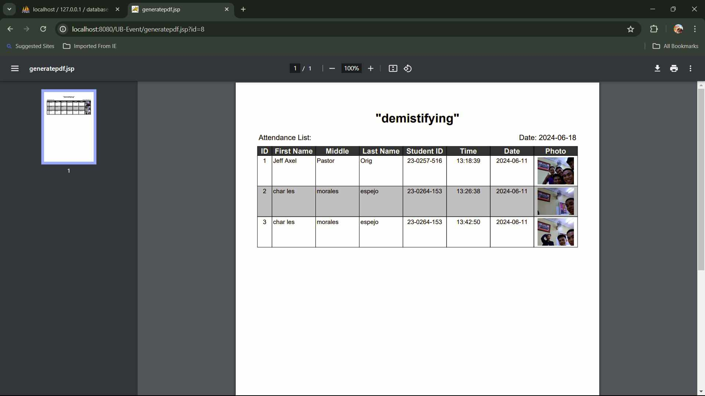
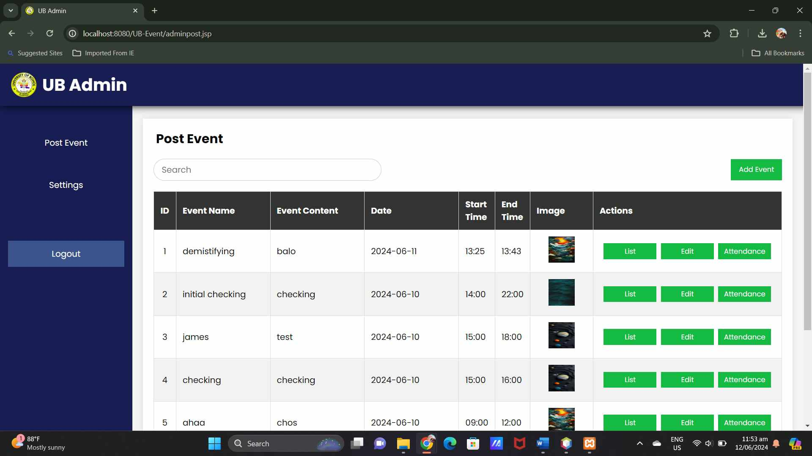
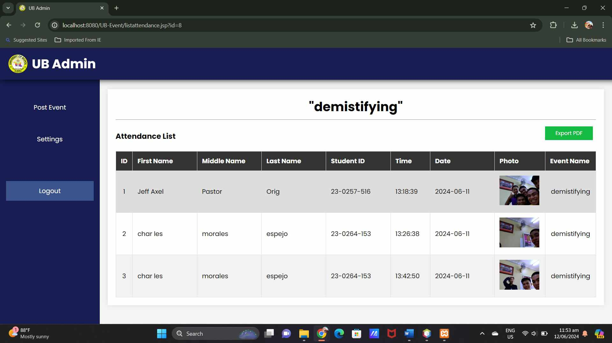
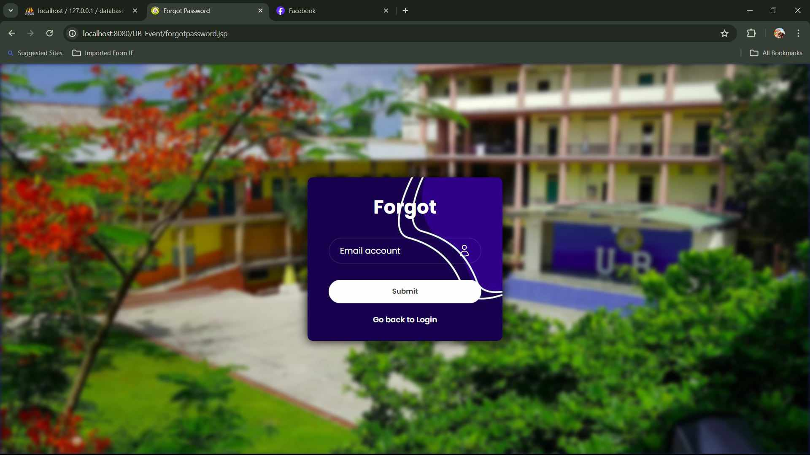
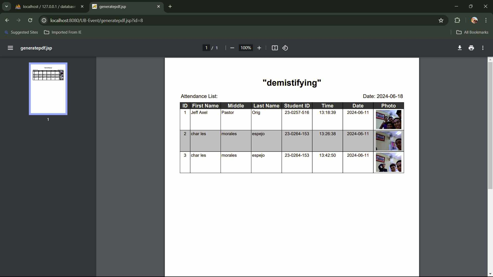

Introduction
Attendance needs to be managed with speed and accuracy for any school function to be completed successfully. Keeping this in mind, we have developed our Online Attendance System with demanding features for educational institutions to build a fully-fledged attendance management system for every school activity. It includes photo compulsory verification and precise geolocation tracking. At check-in, a picture is required to be uploaded by the students and the instructors. This ensures that the attendance recorded will only be of those physically present at the event venue. Accurate attendance records are the result of this dual layer of verification, and it also improves security by minimizing fraudulent entries. Administrators and event organizers have total control over all aspects of attendance data. Furthermore, viewing, managing, and printing detailed attendance lists becomes an easy task, thereby simplifying record-keeping and report generation. This modern and user-friendly platform enables schools to efficiently manage assemblies, field trips, and extracurricular activities, ensuring reliable and readily accessible attendance records.
Now, educational institutions can embrace the future of attendance management through our innovative system that addresses the fast-changing needs of educational institutions.
Scope and Limitation
Scope
Campus Event Management is a comprehensive web application designed to facilitate the organization and management of campus events. The application is divided into two main modules:
- UB-ADMIN: This is the primary administrative interface of the web application. Administrators have privileges to edit or delete user accounts, admin accounts, and event setups. Only verified students can be viewed. The module allows for the addition of new admin accounts.
- UB-EVENT: This module serves both admin and user (student) roles. Admins or school officers organizing events can post events, set desired time frames, locations, and radius limits. Admins can collect student attendance after the event is officially concluded. Students can attend events once their accounts are verified, and they must upload a picture as proof of attendance.
Limitations
- Facial Recognition: The web application currently lacks automatic facial recognition capabilities. As a result, users may potentially upload fake pictures as proof of attendance. Admins are unable to verify user identities due to the absence of facial recognition security.
- Internet Connectivity: The Campus Event Management web application requires an active internet connection to function. Users and admins without internet access cannot use the web application and must attend events physically at the designated stamping area.
Problem Requirements
Purpose
Special attention deserves the definition of our Online Attendance System’s goal: to transform traditional attendance recording and control in educational institutions and the verification of students’ attendance at school activities. In the traditional tracking of attendance, several factors are experienced that include the following: the processes are demanding and are easily susceptible to fraud. Our system deals with these difficulties through a smart approach of providing an online platform that guarantees reliability, safety, and effectiveness.
This method’s combination of photo verification and geographical location tracking eliminates both the risk of fake attendance and imprecise location identification. Unlike other popular event checking applications, students and instructors must be physically present at the event location and take a real photo which is quite effective in reducing fake event check-ins. This also ensures the validity of attendance records while at the same time improving standards of safety and responsibility of occasions held in schools.
In addition, it also provides functional and effective tools to the administrator; where they can manage and monitor attendance of their subordinates and also generate report easily. The functionality for creating and generating comprehensible attendance lists is also helpful in better surveillance and easy work in general. The Online Attendance System is finally aimed at meeting schools’ operational requirements helping schools manage their events and arrange other aspects of school’s life more effectively.
Overall Description
Purpose and Scope
The Campus Event Management system is a meticulously designed web-based application aimed at simplifying the organization and participation in campus events. It streamlines administrative tasks and enhances user experience, offering a comprehensive solution for event organizers and participants.
Audience
The documentation targets developers, administrators, and end-users involved in campus event management within educational institutions.
System Architecture
The system comprises two main modules, UB-ADMIN and UB-EVENT, each catering to different user needs. UB-ADMIN serves as the administrative hub, while UB-EVENT facilitates event posting, attendance tracking, and participant interaction.
Libraries and Backend Technologies
The system is developed using Java as the backend technology, leveraging libraries such as Servlets, JSP (JavaServer Pages), and JDBC (Java Database Connectivity) for server-side processing and database interactions.
Platform Compatibility
The system is designed to run on Java EE 9 application servers, such as Apache Tomcat, and can be deployed on various operating systems, including Windows, macOS, and Linux.
Constraints and Assumptions
Developers should consider performance limitations based on server infrastructure and the number of concurrent users. Compatibility with older web browsers may be limited due to the use of modern web technologies.
Security Considerations
The system employs authentication mechanisms to ensure only verified users can access administrative features and attendance for events.
Performance Characteristics
The system aims to deliver fast response times and efficient resource utilization within the constraints of the Java EE environment and server specifications.
Analysis
Input requirements
- Sign up: First name, Middle name, Last name, Email, Password and confirm password
- Login: Email, Password
- Forgot password: Email
- Change password: Verification, Email
- Verification: First name, Middle name, Last name, Student ID, Picture
- Attendance: First name, Middle name, Last name, Student ID, Picture
- Post event: Title, Content, Image name, Start hour, Start minute, End hour, End minute, Latitude, Longitude, Max distance
- List event: Title, Schedule
Output requirements
- Sign-Up: Confirmation message, User profile
- Login: User page and Admin page, Error messages
- Forgot Password: Password reset confirmation, Password reset link
- Verification: Verification status
- Attendance: Attendance confirmation
- Post Event: Event details
- List Event: Event listing
Design
Files and Their Descriptions
By using JavaServer Pages (JSP), we can combine both the back-end and front-end in a single file. This approach simplifies debugging since you can easily locate errors within the JSP file. However, this may compromise code cleanliness, making it less maintainable in the long run.
User Interface Design
index.jsp:The default entry point for the project. For UB-ADMIN, Admins enter their passwords. For UB-EVENT, Users select whether they are a user or an admin.userlogin.jspandadminlogin.jsp:Pages for user and admin login where email and password are input.usersignup.jspandadminsignup.jsp:Pages for user and admin account creation. Admin accounts can only be created through the main admin interface.userpage.jspandadminpage.jsp:Redirects users and admins to their respective homepages upon successful login.useraccount.jspandadminaccount.jsp:Allows users and admins to view and edit their accounts. Users can verify their accounts and delete them if no longer needed. Admins have additional verification functionalities.userregistration.jsp:Users verify their accounts by taking a picture as proof of identity, granting access to attendance features.userattendance.jsp:Users mark their attendance for events they are attending.adminpost.jsp:Admins can post and edit events, setting the time frame, location, and radius limits.listevent.jsp:Admins can add a list or flow chart of the event.listattendance.jsp:Admins can view the students who attended the event.generatepdf.jsp:Exports the attendance records to a PDF.sendcode.jsp:Sends an authentication code to the user's Google email if they forgot their password.verifycode.jsp:Confirms the user's input of the correct authentication code.edit(all).jsp:Updates data stored in the database tables.delete(all).jsp:Deletes data stored in the database tables.view(all).jsp:Allows the main admin to view all accounts and students.logout(all).jsp:Logs the user out and invalidates the session.
Features of the Project
- User and admin account management.
- Event creation, editing, and posting by admins.
- Attendance tracking for users.
- Email authentication for password recovery.
- PDF generation for attendance records.
- Secure session handling.
Security and Audit Considerations
Session Handling
Manages user sessions efficiently to ensure smooth processing. Automatically invalidates sessions to protect user information and enhance security.
Implementation
URL of the saved source code
Implementing Haversine formula in the code.
https://stackoverflow.com/questions/27928/calculate-distance-between-two-latitude-longitude-points-haversine-formula
Implementation of authentication code
https://stackoverflow.com/questions/21456897/mail-authentication-through-java
Software Package Files and their Descriptive Information
- javax.mail.jar
Description: The javax.mail.jar file is essential for all Java applications that need to establish connections for sending and receiving emails. It includes classes to support SMTP, POP3, and other email protocols and interfaces. This JAR is used to enable creation of new messages, sending and receiving of messages, including any attachments or multipart messages.
Usage: Widely used for integrating email functionality into Java applications for tasks such as creating and initializing email messages, communicating with mail servers for notification and report sending, and other automated mass mailing. - javax.mail-api.jar
Description: The javax.mail-api.jar consists of interfaces and abstract classes of the JavaMail API without implementation. It sets the standards on how email services should operate, while permitting freedom in selection, analogous to an operating system.
Usage: It is used during build processes to compile JavaMail API code, with the actual implementation being provided at runtime through application servers or during dependency management. - javax.activation.jar
Description: The javax.activation.jar is a Java archive file that is integrated into the JavaBeans Activation Framework. This JAR is necessary for dealing with file attachments in email messages, as it includes functions for encoding and decoding various data types used in multimedia contents in JavaMail.
Usage: Used specifically for handling email attachments and encoding/decoding various data types in JavaMail, ensuring compatibility and proper functionality of multimedia contents. - iText.jar
Description: The iText.jar file belongs to the iText library, which enables developers to create and manipulate PDF documents via Java. It facilitates the creation of dynamic PDFs, editing PDFs, extracting information from PDFs, and securing PDF documents with encryption and digital signatures.
Usage: Often used in Java-based applications for creating reports, invoices, legal documents, and other types of documents that require PDF format. It provides extensive functionalities for PDF document manipulation and generation. - mysql-connector-java.jar
Description: The mysql-connector-java.jar is the JDBC driver for MySQL databases. This JAR enables Java applications to establish and manage connections to MySQL databases, execute SQL queries, and handle transactions effectively.
Usage: Essential for establishing connections with MySQL databases, performing database operations, and managing transactions in Java applications that interact with MySQL databases. - json.jar
Description: The json.jar contains classes and packages for working with JSON data within a Java application. JSON (JavaScript Object Notation) is a lightweight data interchange format that simplifies data processing and manipulation in various contexts.
Usage: Used in Java applications where manipulation and processing of JSON data is required, such as web services, RESTful APIs, and other applications that handle JSON data formats.
Function Declarations and their Descriptive Purposes
- Authenticate User Login
Purpose: To verify the user's identity and grant access to the system based on their role (e.g., student, teacher, administrator). Ensures that only authorized users can access specific functionalities or information within the system. - Capture and Upload Photo
Purpose: Allows participants to capture a real-time photo during the check-in process at events. The uploaded photo serves as proof of attendance, ensuring the authenticity of attendance records. - Verify Geolocation
Purpose: Validates the participant's presence at the event venue by comparing their current location with the event coordinates. Ensures accurate and legitimate attendance tracking based on physical presence at the designated location. - Generate Attendance Reports
Purpose: Transforms attendance data into comprehensible and manageable reports that administrators can view, download, or print. Facilitates tracking and analysis of participation trends, and serves documentation, accountability, and administrative audit purposes. - Forgot Password with Google Authentication Code
Purpose: Enables users to securely reset their passwords by requesting a verification code from Google's authentication application. Users must enter this code to proceed with the password reset process, enhancing security and protecting accounts during password recovery. - Student Verification
Purpose: Utilizes the list of registered students to verify their identity during registration or check-in processes. Ensures that only legitimate students are allowed to register for events and have their attendance recorded, minimizing fraudulent attendance attempts. - Create Admin Accounts
Purpose: Allows the main administrator or site creator to create additional administrator accounts. Essential for delegating management responsibilities and ensuring multiple trusted personnel can oversee system operations and attendance records.
System References
- UB-ADMIN and UB-EVENT system reference
- Posts event was inspired by Google classroom.
- List event flowchart was inspired by the UB Days flowchart.
- Admin or User selection was referenced in Codechum website.
Image Gallery
 

 






